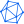
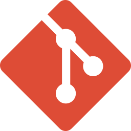
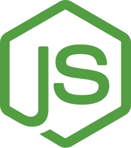
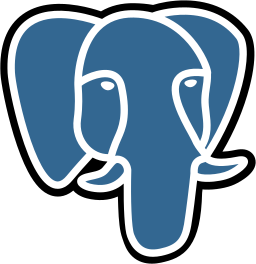

Flies a five-drone PX4 swarm
Leader election over MAVLink with re-election, followers in offboard mode. Code on GitHub
MSc Robotics Engineering, University of Genoa, 2026
I write guidance, state estimation and swarm software in C++ and ROS 2 on PX4 and ArduPilot. Based in Genoa, Italy, open to roles across Europe.
2020 to now, part-time
Deep learning, MRI tumour segmentation and web apps for clients.
2022 to 2024, Appraid-Tech for Honda
A safety-critical Adaptive AUTOSAR gateway in MISRA C++, tested on target hardware in Japan.
2025 to 2026, LAAS-CNRS, remote
Robust model predictive control from scratch, with a wind disturbance observer.
2025 to 2026, Hertel Robotics, remote
Autonomy for a multirotor landing on a moving ship deck, in C++ and ROS 2 on PX4.
Leader election over MAVLink with re-election, followers in offboard mode. Code on GitHub
Zero-copy video on iceoryx, YOLO and OC-SORT on ONNX Runtime, following at up to 10 m/s. Code on GitHub
Barometer-offset simulation across EKF3 and a SmartRTL buffer overflow fix. Pull request on GitHub
Monocular LSD-SLAM in Docker with a ROS 2 bridge that fills an OctoMap. Code on GitHub
Ported R-VIO and added zero-velocity updates, cutting stationary drift 30 to 50% in simulation.
PostA multi-objective SARSA swarm paper built from scratch, simulation engine included.
CodeA C++ YOLO inference library made modular: a build about 8x smaller, batches, CI and benchmarks.
Register-level timer, PWM, ADC, SPI and UART drivers on a 2 ms time-triggered scheduler.
Rate-monotonic POSIX threads under SCHED_FIFO with measured WCET, and a character-device kernel module.
A custom image with a per-process CPU and memory logger as a boot-time systemd service.
CodeC++14/17 and MISRA C++, Python, C, JavaScript.
ROS 2, PX4, ArduPilot, MAVLink, Gazebo SITL, EKF and VIO, SLAM, behavior trees.
OpenCV, AprilTag, YOLO, OC-SORT, PyTorch, ONNX Runtime, U-Net.
Adaptive AUTOSAR, dsPIC33, POSIX real-time, Linux kernel modules, Yocto.

ONNX
Git
Node.jsModels trained in PyTorch and shipped with ONNX and Docker.
A U-Net that segments tumours in MRI, from DICOM data.
React and Node.js apps, PostgreSQL, and Python workflow scripts.

schema.sqlPostgreSQLWork permits, start dates and the roles that fit.
Now. My MSc in Robotics Engineering at the University of Genoa ends in December 2026.
No sponsorship in Italy: my residence permit runs to July 2027 and converts to a work permit outside the yearly quota. Elsewhere, the employer sponsors a permit.
From Genoa, remotely, or after a move within Europe, to Saudi Arabia or to Egypt.
Drone and robot autonomy: swarms, air and ground teams, marine and field robots. Also perception, SLAM, control and embedded work.
Arabic natively, English at C1 for all my work and study, and Italian at A2.